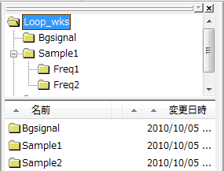
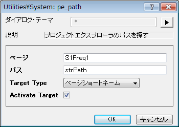
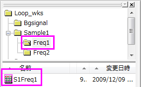
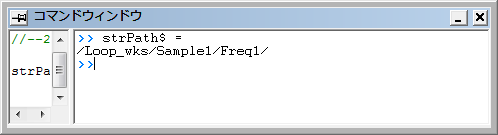

内容 |
プロジェクトエクスプローラのパスを探す
1. pe_path path:=aa;
2. pe_path page:="Book1"
| 表示 名 |
変数 名 |
I/O と データ型 |
デフォルト 値 |
説明 |
|---|---|---|---|---|
| ページ | page |
入力 string |
|
検索するページの名前 |
| パス | path |
出力 string |
<optional> |
検索するページのパス |
指定したページが存在するフォルダのパスを取得します。ページが指定されない場合、現在のパスが返されます。任意の文字列変数にパスを取得することができます。このパスの変数が指定されていないと結果は出力され、指定されていると出力されずに、呼び出したプログラムは、その後に続くLabTalkコードでその文字列変数を使用できます。
現在のパスを変数aa$に入れるには、次のコマンドを使います。
pe_path path:=aa;
プロジェクトにあるワークブックを見つける方法
プロジェクトを開きます。<Origin プログラムフォルダ>\Samples\LabTalk Script Examples\Loop_wks.opj.
Loop_wksのルートフォルダを選択します。

コマンドウィンドウで pe_path -d; を実行し pe_path ダイアログボックスを開きます。 ページに S1Freq1 と入力しパスに strPath と入力します。 Activate Targetにチェックを入れます。

OKボタンをクリックします。 S1Freq1 ワークブックが表示されます。

コマンドウィンドウで strPath$ = ; コマンドを実行します。, すると S1Freq1 ワークブックのパスがコマンドウィンドウに表示されます。
